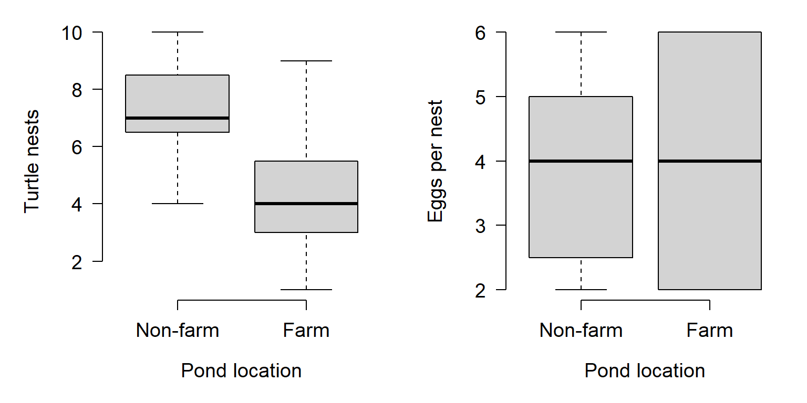
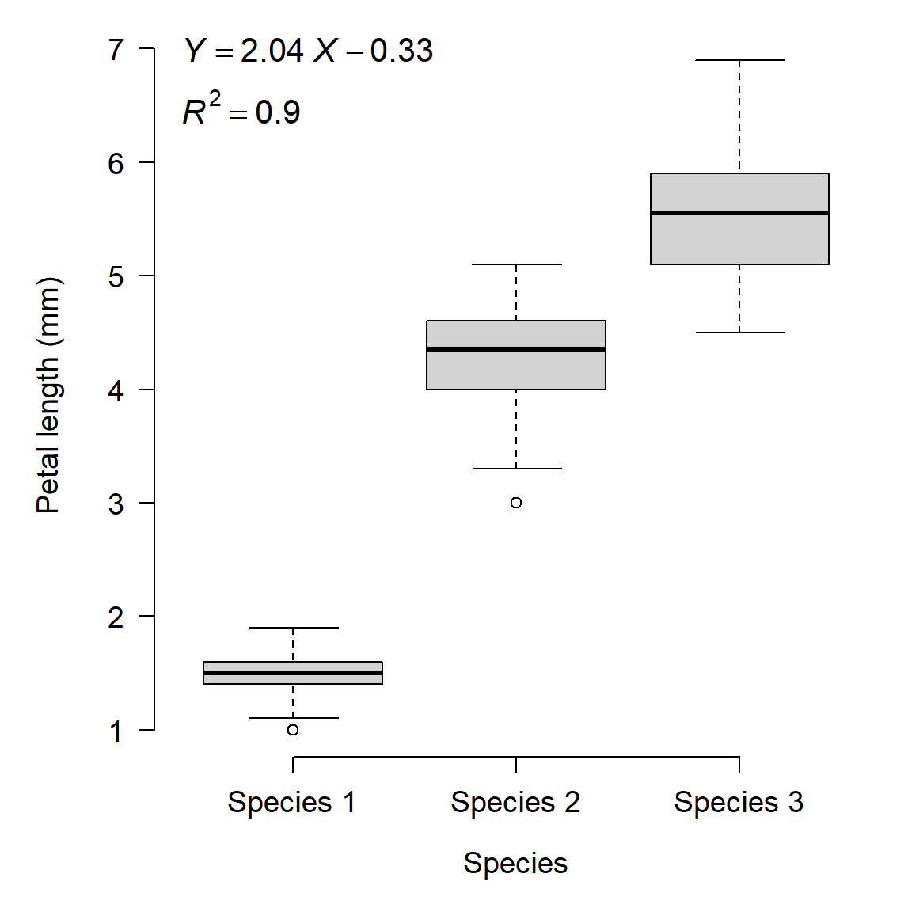

1.3 Misuses of statistics
There are too many ways to misuse statistics, both intentionally and accidentally, to cover here. In this course we’ll explore a few examples that are closely related to this lesson’s main ideas. In my experience, there are 4 common ways in which biologists misuse statistics (intentionally or not):
- Proving the trivial
- Inappropriate methods
- P-value abuse
- Inadequate sample size
Let’s examine each in turn.
1.3.1 “Proving” the trivial and meaningless hypotheses
As valuable as statistics are, it can be tempting to use them too much. Sometimes we do this from an abundance of caution–after all, we want to be sure about the conclusions we draw! However, there is such a thing as too cautious. For example, consider the two versions of a statement below from a fictional article about the effects of forestry practices on soil nitrogen fixation in a national forest:
Version 1:
All trees were removed by clearcutting between 2 and 4 June 2021.
Version 2:
Aboveground woody plant stem count was reduced by 63.1 \(\pm\) 3.8 trees ha-1 days-1 (95% CI = [61.5, 64.9] trees ha-1 days-1); this effect was statistically significant (t = 77.56, 19 d.f., P < 0.0001).
Both statements convey essentially the same information. There were some trees in the forest, then trees were removed by clear-cutting, then there were no trees.
The first statement is just fine. The second statement is also fine, in the sense that it is true and because it includes a perfectly legitimate t-test. But, the test reported in the second statement is of a completely trivial question. Of course there were fewer trees after clear-cutting…that’s what clear-cutting means! The additional verbiage adds no real information to the paper because the paper wasn’t about aboveground woody biomass, but rather about soil N fixation. The reviewers (or editors) would be justified in requiring the removal or shortening of the second statement.
Including unnecessary statistical tests can be tempting in situations where there aren’t many significant test results. For example, if your study produces no significant statistical differences related to your main hypothesis, or a marginal effect that is hard to interpret. Padding the manuscript with additional P-values <0.05 can make the work feel more legitimate and on less shaky ground. Resist this temptation.
The logic of null hypothesis significance testing (NHST; see below) sometimes requires us to consider, at least statistically, hypotheses that we know to be false. One such example involves simulation: when data are simulated, it is meaningless to test whether or not two simulations with different parameters were “significantly different” because they are known to be different. Consider the example below (Green et al. 2021):

In this study, researchers simulated deer populations and the results of surveying those deer using different survey methods. They then used analysis of variance (ANOVA) to compare the mean population estimates resulting from different methods. Their goal was not to determine whether the population estimates were different between different methods. The estimates were known to be different, because the data were simulated in the first place! What they were trying to do was partition the variance; i.e., measure how much of the difference in estimated population size was attributable to survey method (White et al. 2014). If you are conducting a simulation study, remember that the literal null hypothesis of your statistical test is likely meaningless, or at least, known a priori to be false.
1.3.2 Inappropriate methods
Another very common misuse of statistics is simply using statistics incorrectly. Many of these mistakes can be mitigated by better understanding of the methods. In other words, researchers should read the manual. I also like to call this a “problem between chair and keyboard” error3.
1.3.2.1 Common mistake 1: Mischaracterizing a variable
When you perform a statistical test, the variables must have a well-defined type. Some variables are continuous, others are discrete but numerical, and others are categorical. If a variable is treated as the wrong type, it can produce meaningless statistical results. Consider the example below in which the researchers investigated the length of flower petals across 3 species of flower:
iris$x <- as.numeric(iris$Species)
summary(lm(Petal.Length~x, data=iris))##
## Call:
## lm(formula = Petal.Length ~ x, data = iris)
##
## Residuals:
## Min 1Q Median 3Q Max
## -1.303 -0.313 -0.113 0.342 1.342
##
## Coefficients:
## Estimate Std. Error t value Pr(>|t|)
## (Intercept) -0.33200 0.12060 -2.753 0.00664 **
## x 2.04500 0.05582 36.632 < 2e-16 ***
## ---
## Signif. codes: 0 '***' 0.001 '**' 0.01 '*' 0.05 '.' 0.1 ' ' 1
##
## Residual standard error: 0.5582 on 148 degrees of freedom
## Multiple R-squared: 0.9007, Adjusted R-squared: 0.9
## F-statistic: 1342 on 1 and 148 DF, p-value: < 2.2e-16
See the problem? The dependent variable is modeled as a linear function of the species’ identities: literally the numbers 1, 2, and 3. The category labels (species) were treated as numeric values. While the plot shows some clear differences between the species, what if the species had been labeled differently? There is a correct way to analyze these data, but it is not linear regression4.
1.3.2.2 Common mistake 2: Overfitting
Overfitting is when a statistical model is fit with more variables than the data can justify. Generally, a model is overfit when random noise is modeled as if it was part of the deterministic part of the model. Most statistical models have a deterministic part and a stochastic part. The deterministic part predicts the “average” or expected value of the response variable as some function of the explanatory variables. It usually takes the form of an equation (or set of equations). The stochastic part of the model describes how observations vary from the expected value predicted by the deterministic part. The stochastic part usually includes one of more probability distributions. We’ll discuss common probability distributions in a later module.
The figure below shows the relationship between the deterministic part and stochastic part of a common statistical model, the linear model.

Using computers, it is easy to fit equations to data. In most software it is trivial to add predictor variables to a model until all of the variance is explained (i.e., R2 = 1). However, this is usually not a good idea. There is always random noise in any dataset, and the appropriate strategy is always to model that noise rather than try to explain it deterministically. This is because some of that noise is unique to the specific entities or samples that are being sampled. Modeling the noise that is specific to a particular study as if it was representative of all potential studies makes an analysis too parochial to be generally applicable.
Consider the example below. In this plot, 12 data points were generated using a linear model (Y ~ X) with normally distributed residuals. Then, various regression models were fit to the data. Each model contained one more term than the last:
\[\begin{matrix}Linear\ model&Y=\beta_0+\beta_1X\\Quadratic\ model&Y=\beta_0+\beta_1X+\beta_2X^2\\Cubic\ model&Y=\beta_0+\beta_1X+\beta_2X^2+\beta_3X^3\\Quartic\ model&Y=\beta_0+\beta_1X+\beta_2X^2+\beta_3X^3+\beta_4X^4\\Quintic\ model&Y=\beta_0+\beta_1X+\beta_2X^2+\beta_3X^3+\beta_4X^4+\beta_5X^5\\Sextic\ model&Y=\beta_0+\beta_1X+\beta_2X^2+\beta_3X^3+\beta_4X^4+\beta_5X^5+\beta_6X^6\\\end{matrix}\]
In this figure, the model prediction and 95% confidence interval (CI) are shown as a red line and red shaded area. The model residuals are shown as blue lines. The original data are shown as black points.

Notice that the as the model includes more terms, the fit improves. This can be seen because the residuals are generally getting smaller and the predicted values are getting closer to the observed values.
The figure below shows how the fit improved as more terms were added. This figure shows how root mean squared error (RMSE), a measure of model predictive ability, decreases with increasing model complexity.

Notice what happens as the curves pass through more and more of the points: for X values other than the input points, the curves vary wildly. What’s going on here is that the higher-order polynomials are forcing the curves through each point, at the expense of reasonableness between the points. In fact, for any dataset with n observations, you can obtain a perfect fit to the points with a polynomial curve of order n. But, such a curve is highly unlikely to be reasonable because it is not likely to be very applicable to other data. In other words, the model includes terms that are fitting random noise, but do not have general applicability.
A simpler model with fewer terms, and thus greater variance between the data and their predicted values, would likely have more predictive power for new data. Thus, the simpler model might be a better representation of the underlying process. In data science this phenomenon is often called the bias-variance trade-off because in general it’s easy to minimize prediction error on the training data (“variance”) but at the cost of decreasing prediction error on new observations (“bias”). This is because some of the variation in the training data is actually random noise and thus fitting the model to explain it is really explaining nothing.
1.3.3 P-hacking and data dredging
The third misuse of statistics that we’ll explore here is that of searching for significant P-values, and worrying later whether or not the tests make sense. P-hacking refers to massaging or adjusting an analysis to produce a P-value <0.05. This can take many forms: post hoc rationalizations for removing certain observations, reframing a question, dropping categories or levels of a factor, and so on. Data dredging is a similar kind of practice where a researcher compares many variables or performs many tests, and builds a story out of the tests with P < 0.05. Both of these activities can produce interesting results, but the results might not be very meaningful.
The problems with P-hacking are legion, but I’ll just point out two.
- P-hacking allows the researcher to commit scientific misconduct, whether intentionally or not. Your objective should be to find the correct answer, not to minimize a P-value.
- P-hacking sets you up to commit what’s called the Texas Sharpshooter Fallacy. This name evokes the story of a (Texan) gunman shooting a barn, then drawing targets around the bullet holes to make it look like he hit his targets. Another expression that describes this is, “Hypothesizing after results known,” or HARK.

Data dredging has all of the same problems as P-hacking, but arrives at them a different way. Whereas a P-hacker adjusts the analysis until the P-value is significant, a data dredger just keeps trying new variables until one of them hits. This approach is perhaps best summarized in the following comic5, although Head et al. (2015) provide a more rigorous treatment.

1.3.4 Inadequate sample sizes and pseudoreplication
1.3.4.1 Sample sizes and statistical power
Size matters in biology (Smith and Lyons 2013). Size also matters in statistics (Makin and Xivry 2019). As we’ll see in the next section, the number of observations in a study can have a large impact on whether or not a pattern is detected in the data. Generally, studies with greater sample sizes can detect smaller effects. Put another way, studies with greater sample sizes are more likely to detect an effect of a given magnitude. On the other hand, studies with smaller sample sizes are less likely to detect an effect. Both of these situations present their own kinds of problems, summarized in the table below.

Ideally we should reject the null hypothesis when it is false, and fail to reject it when it is true. However, data always have some element of randomness in them and thus we can never be perfectly sure that the conclusions of a test are correct. Statisticians have thought about this problem a lot and boiled it down to two probabilities: \(\alpha\) and \(\beta\).
- \(\alpha\) is the type I error rate, the probability of rejecting the null hypothesis when it is true.
- \(\beta\) is the type II error rate, the probability of failing to reject the null hypothesis when it is false.
There is a trade-off between the two error probabilities: decreasing one usually increases the other. By convention, \(\alpha\) is usually set to 5% (0.05). P-values are compared to this value \(\alpha\): if \(P \ge \alpha\), then we “fail to reject” the null hypothesis. If P < \(\alpha\), then we reject the null hypothesis with the understanding that P is the probability of a type I error.
What does all of this have to do with sample size? That probability that a test will correctly reject a false null hypothesis, \(1-\beta\), is known as the power of a test. The power of a test tends to increase with larger \(\alpha\), greater sample size, and larger effect size. The R commands below demonstrate this:
set.seed(123)
# type II error:
x1 <- rnorm(10, 5, 2)
x2 <- rnorm(10, 5.2, 2)
t.test(x1, x2)##
## Welch Two Sample t-test
##
## data: x1 and x2
## t = -0.5249, df = 17.872, p-value = 0.6061
## alternative hypothesis: true difference in means is not equal to 0
## 95 percent confidence interval:
## -2.342098 1.406112
## sample estimates:
## mean of x mean of y
## 5.149251 5.617244# larger sample size:
x3 <- rnorm(1000, 5, 2)
x4 <- rnorm(1000, 5.2, 2)
t.test(x3,x4)##
## Welch Two Sample t-test
##
## data: x3 and x4
## t = -2.6522, df = 1998, p-value = 0.008059
## alternative hypothesis: true difference in means is not equal to 0
## 95 percent confidence interval:
## -0.41274937 -0.06182918
## sample estimates:
## mean of x mean of y
## 5.036722 5.274011# larger effect size:
x5 <- rnorm(10, 5, 2)
x6 <- rnorm(10, 10, 2)
t.test(x5, x6)##
## Welch Two Sample t-test
##
## data: x5 and x6
## t = -5.4059, df = 16.404, p-value = 5.348e-05
## alternative hypothesis: true difference in means is not equal to 0
## 95 percent confidence interval:
## -6.524121 -2.853887
## sample estimates:
## mean of x mean of y
## 5.522159 10.211163In practical terms, this means that conducting a test with too few observations can make it more likely that you will fail to detect a pattern that is really there: a type II error. This happens all the time in biology, and it can be devastating to a research program. To reduce the chances that it happens to you, consider these steps:
- Increase your sample size. When in doubt, increase your sample size.
- Decrease sources of variation that you can control. Any extraneous variation caused by experimental errors, sloppy technique, improperly trained lab assistants, etc., will reduce the power of your test.
- Conduct a power analysis. Power analysis is a set of techniques for estimating the probability of detecting an effect given sample size, effect size, and other factors. It works best when you have some pilot data or comparable data from literature. Power analysis is extremely useful for answering questions like, “How many samples should I collect?” or “What is the relative benefit of collecting 10 more samples or 20 more samples?”. Power analyses for simple methods like t-tests or ANOVA are very straightforward; more complex methods may require simulation.
1.3.4.2 Pseudoreplication
Psuedoreplication is a situation where samples are treated as independent when they are not (Hurlbert 1984). This leads to an analysis where the sample size is artificially inflated, and thus the analysis has greater apparent power than it actually does. Pseudoreplication is essentially the opposite problem as inadequate sample size: rather than having fewer observations than needed to do the analysis, the researcher does the analysis as if they have more observations than they really do. The seminal paper on this topic in ecology is Hurlbert (1984)..
To understand pseudoreplication, it’s important to keep in mind the difference between an observation and a degree of freedom. Degrees of freedom can be thought of as independent pieces of information. Ideally, each observation contributes information to the dataset and so a dataset contains as many pieces of information as it does observations. In statistics, however, we find that this not possible. Every time we calculate a summary statistic or estimate a model parameter, we use information from the dataset. If we know the data and know a statistic such as the mean, then some of the information must be in the statistic and not the dataset. For example, if you have 10 values and calculate the mean, the mean is considered to be known with 9 degrees of freedom. This is because if you know the mean, 9 of the values are free to vary without taking away your ability to calculate the 10th value given those 9 values and the mean. The R code below illustrates this:
set.seed(123)
a <- sample(1:10, 10, replace=TRUE)
a## [1] 3 3 10 2 6 5 4 6 9 10(mean(a)*length(a))-sum(a[1:9]) == a[10]## [1] TRUEPsuedoreplication often occurs when researchers consider multiple measurements from the same sampling unit as different observations. For example, if an ecologist measures tree diameters from multiple trees within 20 m of each other. Or, a microbiologist measures cell counts from multiple assays of the same culture tube. In both cases, there is strong reason to suspect that the multiple values are not independent of each other. In fact, it might be more appropriate to take the average of the multiple values and treat them as a single value (a “measure twice, cut once” approach).
Pseudoreplication can be a serious issue in investigations because most statistical models (e.g., ANOVA) assume that treatments are replicated. This means that each treatment is applied to multiple experimental units (i.e., samples). Applying a treatment or condition to multiple samples allows estimation of variability within a treatment. This variability must be separated from variability between treatments in order for a researcher to be able to infer how much variation is caused by the treatments.
For example, imagine a drug trial where Drug A and Drug B are each given to one person. This trial cannot distinguish whether Drug A or Drug B is more effective, because there is no way to know whether any difference in outcome between the two subjects is due to the drugs or due to differences between people. But, if Drug A and Drug B were each tried on 100 people, the variability among the 100 people who received Drug A and among the 100 people who receive Drug B could be compared to the variability between people who received Drug A or Drug B. This would allow the researchers to make some inferences about how effective each drug was.
The best strategy for mitigating pseudoreplication is to avoid it. This requires thinking very carefully about your experimental design and about what the experimental units (i.e., samples) really are. Avoiding pseudoreplication often involves some degree of randomization, in order to break any connection between potentially confounding variables.
If avoiding pseudoreplication is not possible, then you need to account for it. One way is to take steps to mitigate confounding variables. For example, you could rearrange plants in a growth chamber each day so that any effects of location within the chamber would be minimized. Another way is to acknowledge pseudoreplication in your analysis. Some methods such as mixed effects models or autocorrelation structures can account for some pseudoreplication (but you need to be very careful about doing this and very explicit about what you did). Finally, you can be open about the limitations of your study and present your findings as preliminary, or as not conclusive. Note that this strategy, while certainly ego-deflating, does not mean that your work is invalid. Openness and honesty are vital parts of the scientific process. What would be invalid would be ignoring any pseudoreplication in your study and overstating the validity of your results.
Hurlbert (1984) defined four kinds of pseudoreplication: simple, temporal, sacrificial, and implicit. The first 3 is shown in the figure below.

1.3.4.2.1 Simple pseudoreplication
Simple pseudoreplication occurs when there is one experimental unit, or replicate, per treatment, regardless of how many samples are taken within each replicate. When this occurs, variability between replicates cannot be separated from variation between treatments.
Example
Barney is interested in the effects of forest management practices on soil microbes. He visits two forest sites: Site A is burned regularly, and Site B is unmanaged. Barney uses a GIS to randomly identify a 1 ha plot within each site. He then visits each site and takes 20 soil samples from the randomly selected plot. Barney then measures the metabolic profile of each soil microbe sample (n = 40) and compares the 20 samples from the burned plot to the 20 samples from the unburned plot.

The problem here is that Barney might actually only have 2 samples: one from the burned plot, and one from the unburned plot. If the plots are relatively homogenous, then we should expect their microbiota to be similar simply because of their proximity and shared environment. So, the proper experimental unit is the plot, not the soil sample. Barney has collected a dataset with simple pseudoreplication because he confused taking multiple measurements within an experimental unit with taking measurements at multiple experimental units. In other words, his “replicates” are not true replicates. Barney’s thesis advisor tells him to sample more sites and to investigate mixed models and block designs for his analysis.
1.3.4.2.2 Temporal pseudoreplication
Temporal pseudoreplication occurs when multiple samples from an experimental unit are taken over time and then treated as statistically independent. Because successive samples from the same experimental unit are likely to be correlated with each other, they cannot be treated as independent.
Example
Betty is interested in the effects of a new sugar substitute on the growth of gut bacteria. She inoculates 10 plates with E. coli bacteria and gives the new sweetener to 5 of them. She then counts the number of colony forming units (CFU) on each plate at 1, 2, 3, and 4 days after exposure. Betty analyzes her data using a t-test, with 20 exposed samples (5 plates \(\times\) 4 sampling occasions) and 20 control samples.

Betty’s problem is like Barney’s problem, but with time instead of space. The subsequent samples from each plate are not independent of each other. For example, the number of CFU in plate A at 2 days was at least partially dependent on the number of CFU in plate A at 1 day. Using consecutive samples from the same plates does not increase the number of samples in a test of the effect of the sweetener. Instead, Betty introduced a new variable, time, into the system that added variation instead of increasing sample size. She could account for the temporal pseudoreplication in her analysis by including time as a covariate or using some sort of autocorrelation structure. If she does not include time in her analysis, however, she’s going to have a bad time.
1.3.4.2.3 Sacrificial pseudoreplication
Sacrificial pseudoreplication occurs when data for replicates are pooled prior to analysis, or where two or more observations from the same experimental unit are treated as independent replicates. The term “sacrificial” comes from the fact that information about variation among replicates is confounded with variation among samples within replicates, and thus “lost”.
Example
Fred is studying the onset of estrus in female cotton rats (Sigmodon hispidus) and suspects that it may be driven by exposure to a compound produced by certain grasses in the spring. He places 80 female rats in 40 cages (2 per cage). Rats in 40 cages are fed ordinary rodent chow, while the rates in the other cages are fed chow supplemented with the suspect compound. Rats are checked each day for signs of estrus. Clearly, each treatment (control vs. supplemented) is replicated. How many times? Fred tells his advisor that each treatment is replicated 40 times, because 40 rats received each treatment.

Not so fast. Mammalogists know that estrus can be induced in female rodents by exposure to airborne chemical cues (pheromones) from other females already in estrus. So, if there are two females in one cage and one goes into estrus (no matter the reason), the other animal might go into estrus in response the first animal’s pheromones and not at all in response to its diet. This means that the two animals in each cage cannot be considered statistically independent. So, Fred has at most 20 replicates of each treatment, not 40.
But it gets worse for Fred. The vivarium is old and cramped and poorly ventilated. All 40 cages are kept on a single shelving unit in a single room, and the air always smells like fouled rodent cages. Are the 40 cages really independent of each other, if chemical signals can waft between cages? So, depending on the ventilation in the room, Fred might have 0 replicates because none of the animals are statistically independent of each other. Fred’s thesis defense does not go well.
1.3.4.2.4 Implicit pseudoreplication
The last kind of pseudoreplication, implicit pseudoreplication, occurs when researchers present means and standard errors (SE) (or 95% CI) for observations within experimental units. Doing so implicitly tests for a difference between units, effectively getting a significance test for free without actually performing one! Meaningful means and SE should be calculated between experimental units, not within units. Variability within experimental units should be expressed using standard deviation, not standard error.
Example
Wilma is studying soil nutrient content in forests under different climate change scenarios. She grows 5 pine tree seedlings in growth chamber A under atmospheric CO2 (400 ppm) and 5 seedlings in growth chamber B under elevated CO2 (600 ppm). She then calculates the mean and SE of soil N content from the 5 seedlings in each chamber. In chamber A, soil N concentration was 1.89 \(\pm\) 0.34 SE g/kg; in chamber B, N concentration was 3.72 \(\pm\) 0.14 g/kg. Because the mean soil N concentration was greater in chamber B, and the means \(\pm\) SE did not overlap, she concluded that growing pine seedlings in elevated CO2 increased soil N concentration.

Not quite. Wilma summarized the uncertainty surrounding soil N measurements, which was a good idea. But, she presented the uncertainty as standard error, not standard deviation. Variation within each chamber should be calculated as SD. The SE would be appropriate for describing uncertainty about the difference in means between chambers. By presenting SE instead of SD, Wilma made it look like there was much less variability within treatments than there really was. As a rule, you should always calculate SD. SE usually comes up as part of the results of a statistical test.
1.3.4.3 Sample size and pseudoreplication summary
The problems related to statistical power are not new in biology. Button et al. (2013) reviewed some causes and consequences of low power in neuroscience. Lazic et al. (2018) describe some of the difficulties with defining sample sizes in cell culture and animal studies, and the resulting issue of pseudoreplication. In ecology and environmental biology, Hurlbert (1984) is the seminal reference on sample size and pseudoreplication.